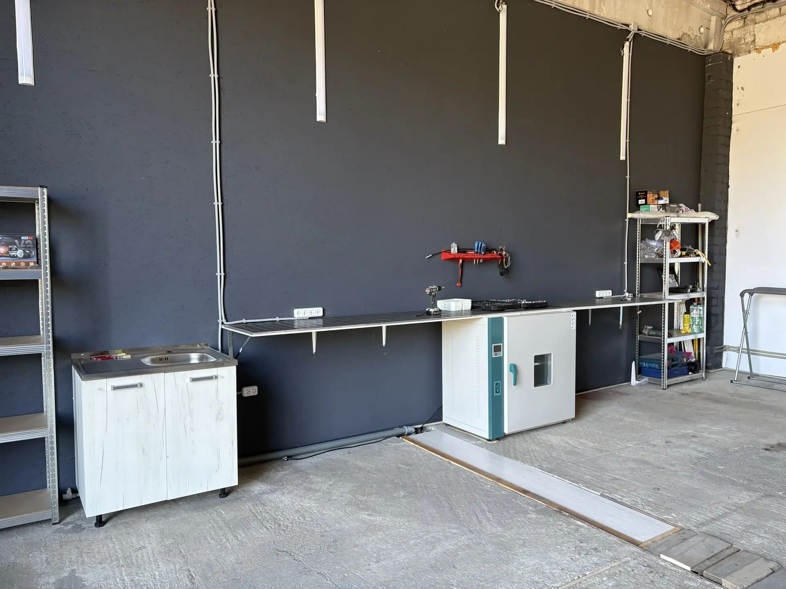
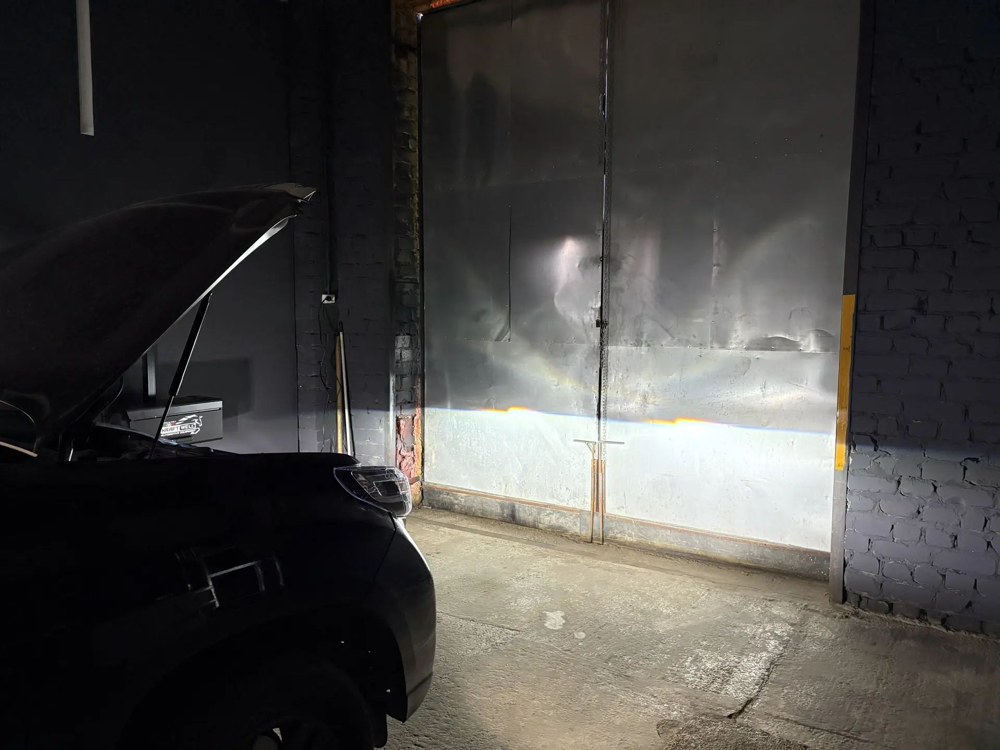

Качественный и яркий свет фар для комфорта, безопасности и уверенности за рулём в любое время суток и при любых погодных условиях.
Уверенность за рулём при любой погоде и в любое время суток.
Ремонт, тюнинг, установка Bi-LED модулей, восстановление оптики.
Полная ответственность за все выполненные работы и материалы.
Большой выбор проверенного автосвета — экономия времени и денег.
Установка и замена современных Bi-LED модулей для яркого и равномерного света.
Покраска масок и аккуратный антихром для индивидуального вида оптики.
Замена повреждённых стёкол и штатных ламп с восстановлением световой эффективности.
Разборка в термопечи и сборка на заводской герметик для надёжной защиты оптики.
Полировка и восстановление прозрачности фар для чистого внешнего вида и света.
Пайка пластика, ремонт корпусов и восстановление геометрии креплений.
Точная регулировка светотеневой границы на профессиональном реглоскопе Kraftwell.

Мы работаем в идеальной чистоте на профессиональном оборудовании. Никаких «фенов на коленке».
В нашем арсенале специализированная термопечь для бережной и безопасной распаковки оптики, которая сохраняет пластик вашей фары в заводском состоянии.

Вы получаете мощный, плотный и правильный свет. Четкая светотеневая граница (СТГ) пробивает любую непогоду.
Ваш свет будет освещать обочины и знаки, обеспечивая максимальную безопасность, и при этом абсолютно не ослеплять встречных водителей.